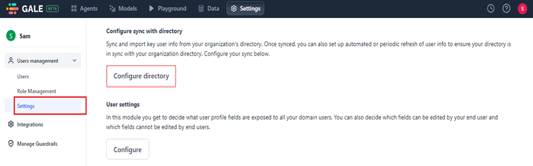
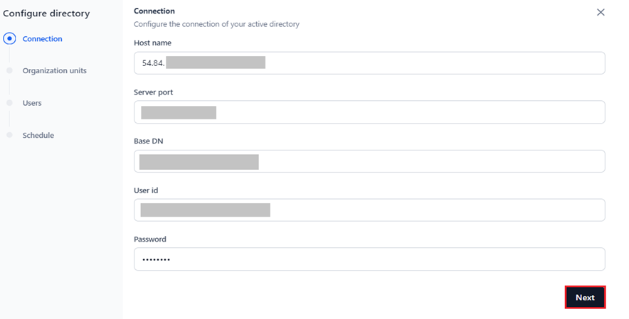
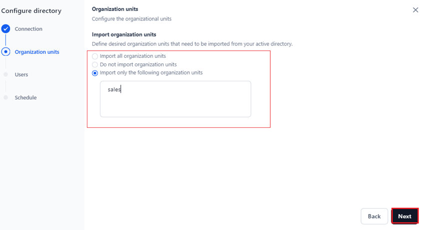
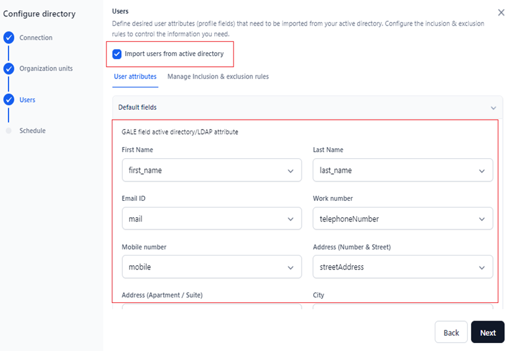
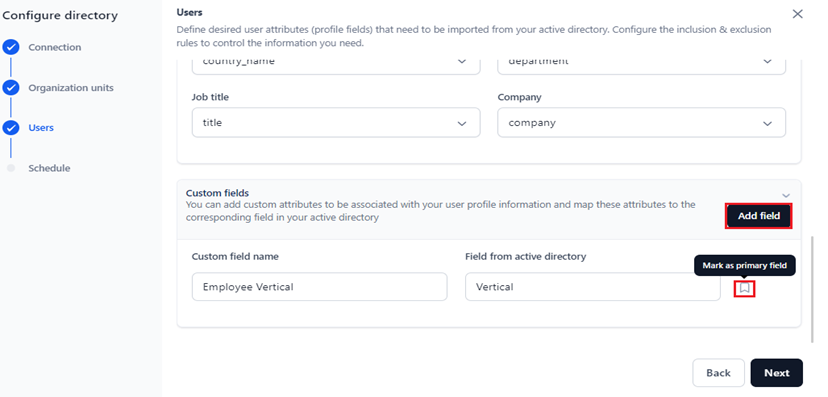
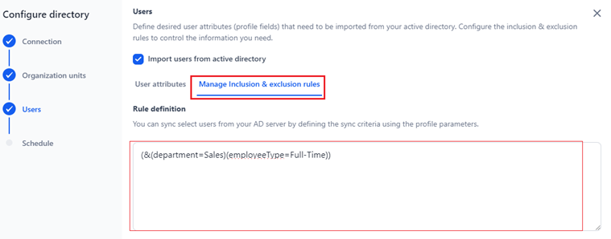
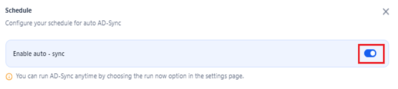
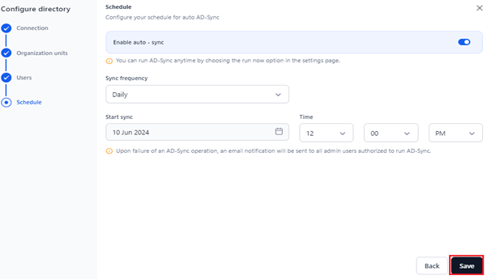
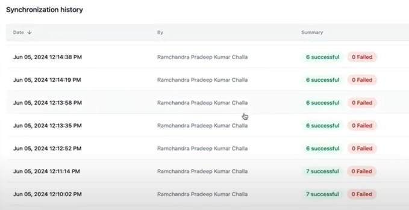

Active Directory: Configuring Automatic User Data Synchronization¶
By configuring Active Directory (AD) import, you can seamlessly bring your organizational user information into the Settings console and keep it in sync with a single source of truth. This bulk import eliminates the need for email invitations or manual user info file imports, making the process more efficient.
Moreover, the automatic synchronization (auto sync) feature ensures that Settings always has the most up-to-date user information, even reflecting deleted and modified records in the AD.
Important
An AD professional with the necessary technical expertise should handle the auto sync process.
Key Steps for Configuring AD Import
- Set up the Connection: Connect the Settings Console to your organization's AD to enable data import.
- Select and Import the Organizational Units (OUs): Choose specific OUs or all OUs from which to import key user information.
- Specify User Attributes and Configure Rules for Selective Import from AD: Define desired user attributes (profile fields) that need to be imported from your active directory. Configure the inclusion and exclusion rules to control the information you need.
- Schedule Automatic AD Sync: Set up automatic or periodic sync schedules to keep user data current and reflect any changes or deletions from AD.
Steps to Configure AD Sync¶
- Navigate to Users Management > Settings on the Settings console.
-
Click the Configure Directory button in the Configure sync with directory section. 
-
Complete the setup by following the steps below in the Configure Directory window:
{kind=link}
Note
- The left panel gives you complete control over the configuration process. Completed steps are marked by a check, and steps in progress are indicated by a dot, offering a clear and intuitive visual guide.
- To complete the configuration, perform each step in order without skipping any.
Step 1: Set up the Connection¶
- Configure the AD connection by providing the following mandatory fields:
- Host Name: The domain's hostname or IP address where AD services run.
- Server Port: The network port number used by the domain host to communicate over the network.
- Base DN: The server location for users and groups in a domain.
- User ID: The identity used to log into the AD.
- Password: The password used to log into the AD.
- (Optional) SSL: Enable this option to secure communications over the web, particularly for services and applications that interact with AD via HTTPS. 
{kind=link}
- Click Next to confirm the credentials before proceeding. If validation errors occur, they will be displayed on the screen so you can correct them before continuing.
Step 2: Import Organization Units¶
Follow the steps below to configure and import user data from key organizational units such as Sales, Finance, or Operations in your AD:
- Select one of the following options based on your requirements:
- Import all organization units: Imports user information from all the organization units.
- Do not import organization units: Do not import user information from any organization units in the AD.
- Import only the following organization units: Imports user information only from the organization unit you select.
- Click Next to proceed to user profile fields mapping. 
{kind=link}
Step 3: Specify User Attributes and Configure Rules for Selective Import from AD¶
In this configuration step, you can do the following:
- Define the LDAP user attributes (profile fields) to be imported from the AD.
- Establish inclusion and exclusion rules to filter data and import the necessary information. Inclusion rules define which user data to include in auto sync or import, focusing on relevant users who meet certain conditions. Exclusion rules determine which user data to exclude from the AD import.
To define both default (predefined) and custom fields during setup, follow the steps below:
- (Optional) Select Import users from active directory to fetch the user default fields from the AD.
-
Click the User Attributes tab and select the value from the dropdown to map the field from the AD to the user attribute for all the fields under Default Fields. 
-
(Optional) In addition to the default fields, you can add custom fields for your user profile information and map them to a corresponding field in the AD. To add a custom field mapping, follow the steps below:
{kind=link}
- Click Add Field in the Custom Fields section.
- Enter the custom field you want to map to your user profile in the Custom field name textbox.
- Enter the corresponding AD field in the Field from Active Directory textbox.
- (Optional) Click the tag icon to set the custom field as the primary field. However, to delete this field, you must first remove the primary field tag.
- Click Next to complete user profile fields' mapping and proceed. 
{kind=link}
To remove a field, click the Delete icon as shown below.
{kind=link}
Note
Deleting a custom field is allowed only if you have added multiple fields.
- Next, define the rules and sync criteria to import specific users from your AD server. To do this, click the Manage Inclusion & Exclusion Rules tab.
- Under Inclusion Rules, you can sync specific users from your AD Server by defining criteria or filters using profile parameters. Enter the rule expression using the user profile parameters in the Rule Definition textbox according to the LDAP filter syntax mentioned here. 
{kind=link}
- (Optional) An Exclusion Rule includes the AD/LDAP field, Match Type, and Value. You must set Match Type for one of the following options:
- Exact Match: The user profile AD field must exactly match the Value field you specify. For example, if Employee Vertical must precisely match “Sales,” use this option.
- Partial Match: The user profile AD field can partially match or include the Value field you specify. For instance, if Employee Vertical should match part of “Product Sales” (such as “Product” or “Sales”), choose this option.
- Multiple Matches: The user profile AD field must match all the values you set in the Value field. For example, if Employee Vertical should match both “Product Sales” and “Service Sales,” select this option.
Steps to Set Exclusion Rules
To set an Exclusion Rules, follow the steps below:
- Click +Add exclusion to add a new rule entry.
- Select the entry to enable the exclusion rule.
- Click Next to proceed.
Note
All mandatory fields must be filled in before you can proceed to the next step.Deleting a custom field is allowed only if you have added multiple fields.
{kind=link}
To delete a rule, hover over the entry and click the Delete icon.
{kind=link}
Step 4: Schedule Automatic AD Sync¶
To finish configuring your directory, schedule auto sync for your AD. Enabling auto sync is optional but highly recommended to keep your AD data on GALE up-to-date.
Auto sync will ensure that any changes in AD, such as user additions or deletions, are automatically reflected on GALE.
Note
When Auto Sync is disabled, you must manually initiate AD sync by clicking the Sync Now button under Configure Sync with Directory.
To enable and configure auto sync, follow the steps below:
- Click the Enable auto-sync toggle. 
{kind=link}
Note
You can run AD-Sync anytime by choosing the run now option on the settings page.
- Select the following sync fields:
- Sync Frequency: Select from daily, weekly, monthly, or other _sync periods. The default selection is _Daily.
- Sync Start: Click the Calendar icon and choose a date from the widget to start the AD sync. The default selection is the current date.
- Time: According to the selected sync frequency, select when the AD sync should occur. The default setting is 12:00 PM.
Note
- You can select only one date from the calendar for weekly and monthly syncs.
- You can schedule the sync only with a future date and time from the default selections.
Daily
Selecting the Daily option means user data from AD synchronizes everyday starting from the date specified for Start Sync and continuing for the duration of the AD connection.
Note
The default selection for Start Sync is the current date, which you can change.
For example, the data syncs daily from 10 June 2024 at 12:00 PM.
{kind=link}
Weekly
Selecting the Weekly option means user data from AD synchronizes on the selected day every week (Repeat On option), starting from the date you set for Start Sync and continuing for the duration of the AD connection.
For example, the data syncs every Thursday from 10 June 2024, at 12:00 PM.
{kind=link}
Monthly
Selecting monthly triggers synchronizes user data from the AD on the designated day of each month, starting from the specified Start Sync date and continuing throughout the duration of the AD connection.
For example, the data syncs on the 15th of each month, starting from 10 June 2024, at 12:00 PM.
{kind=link}
Other
Select Other to schedule AD syncs at intervals different from Daily, Weekly, or Monthly. This option allows you to schedule syncs that repeat after a specified number of days/weeks. The periodic sync occurs at the specified time starting from the selected start date.
For example, the data sync repeats every 60 days or weeks, starting 10 June 2024 at 12:00 PM.
{kind=link}
- Click Save. 
{kind=link}
If auto sync is disabled, clicking Save only saves the AD sync configuration. Enabling auto-sync saves the configuration and initiates syncing at the scheduled date and time.
When you set up AD sync for the first time, the following options appear under Configure sync with directory:
- Sync now: Performs an ad hoc AD sync. Select this option if you do not want to perform a scheduled sync.
- Sync History: Displays the history of AD syncs, including the comprehensive summary of the following:
- Date and Time: Timestamp indicating when the sync occurred.
- By: Identification of the individual who initiated the sync.
-
The number of successful and failed user records that got synced. 
-
Manage directory sync: Displays the Configure Directory window where you can edit the existing configurations.
- Reset: Resets the AD sync configurations but retains the last sync data on GALE.
- Sync Status: This information summary displays the date of last sync, the total number of users and organization units synchronized, and any errors/issues encountered during the process.
{kind=link}
Note
Even if auto sync is turned off, you can click on the Change link in the sync status to access and schedule an auto sync on the configuration page.
{kind=link}
Sync Status Email Notifications¶
For a successful sync, you will receive the following email:
{kind=link}
For a failed sync, you will receive the following email:
{kind=link}
An alternative way to add users to your account (without using AD sync) is to invite them via email. Learn more.
To learn more about other administrator features on the Settings Console, click here.